Pagan Sun Worship and Catholicism
The Sunburst Image, the Queen of Heaven and Baal.
Here you see a ceiling decoration in the Sala delle Arti Liberali. It is
the coat of arms for the Borgia Pope (Alexander VI, 1492-1503).
| 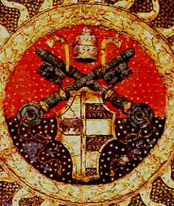 |
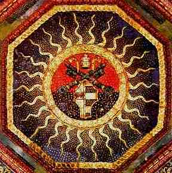 |
From the book Art
Treasures of the Vatican
© 1974 by Smeets Offset B.V.
Prentice-Hall, Inc. |
It consists of the 3-tiered Papal Tiara, and the keys to the kingdom,
common symbols of Papal authority. The pagan sunburst predominates around the
coat of arms as shown on the overview at right. Notice the animal on the left
side of the shield? That is a golden bull, the heraldic animal of the Borgia
family. It is more than just a little reminiscent of the golden calf the
Israelites made at Sinai. Sunbursts and images of golden bulls. How much more
pagan can you get?
| The Apis bull, as depicted in this Egyptian statuette,
is likely to be the pattern used for the golden calf the Israelites made
at Mount Sinai (Exo. 32), since they were undoubtedly quite familiar
with it as a result of their long captivity in Egypt. Note the sun disk
on the head, and the serpent in front of the sun disk. In Scripture the
serpent is symbolic of Satan. (Gen 3, Rev. 12:9) |
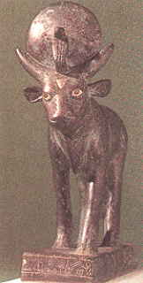
The British Museum |
| 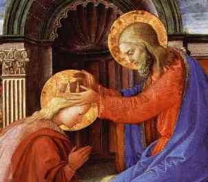 |
At left is the central scene of the "Coronation of the
Virgin", painted around 1444 by Filippo Lippi. Mary is being crowned as
the Queen of Heaven, which is a title conferred on Mary by Catholicism.
One document where this can be found is  INEFFABILIS DEUS, the Apostolic Constitution Defining the Dogma
of the Immaculate Conception, of Pope Pius IX, December 8th, 1854. It
closes with the following paragraph- (emphasis is mine)
INEFFABILIS DEUS, the Apostolic Constitution Defining the Dogma
of the Immaculate Conception, of Pope Pius IX, December 8th, 1854. It
closes with the following paragraph- (emphasis is mine) |
Let all the children of the Catholic Church, who are so very dear to us,
hear thee words of ours. With a still more ardent zeal for piety, religion,
and love, let them continue to venerate, invoke and pray to the most Blessed
Virgin Mary, Mother of God, conceived without original sin. Let them fly
with utter confidence to the most sweet Mother of mercy and grace in all
dangers, difficulties, needs, doubts and fears. Under her guidance, under
her patronage, under her kindness and protection, nothing is to be feared;
nothing is hopeless. Because, while bearing toward us a truly motherly
affection and having in her care the work of our salvation,
she is solicitous about the whole human race. And since She has been
appointed by God to be the Queen of heaven and earth, and is
exalted above all the choirs of angels and saints, and even stands at the
right hand of her only-begotton Son, Jesus Christ our Lord, she presents our
petitions in a most efficacious manner. What she asks, she obtains. Her
pleas can never be unheard.
In 1954, Pope Pius XII officially declared Mary the Queen of Heaven.
Here is the full text of his encyclical
AD CAELI REGINAM.
There has been a complete substitution of Mary for Jesus, in the work of
our salvation, and in whom we pray to in times of need. The impression is that
Mary will listen, but God is cold and unapproachable. Mary will grant your
wishes, when God might otherwise reject them, and God is bound by the will of
Mary. Salvation is obtained from Mary and God will rubberstamp her decisions.
There is a word for this, it is AntiChrist. (The word anti means in place of,
or substitution, as well as against.)
Another place this can be found is in The Dogmatic Constitution on the
Church (LUMEN GENTIUM) by Pope Paul VI, November 21, 1964, paragraph 59-
(emphasis is mine)
... Finally, the Immaculate Virgin, preserved free from all guilt of
original sin, on the completion of her earthly sojourn, was taken up body
and soul into heavenly glory, and exalted by the Lord as Queen of the
universe, that she might be the more fully conformed to her Son,
the Lord of lords and the conqueror of sin and death.
The last part of that sentence (that she might be the more fully conformed
to her Son) can be rephrased as follows ... that she might be more like her
Son... As I said, this is plainly AntiChrist. This paragraph from LUMEN
GENTIUM was most recently quoted and reaffirmed in the Vatican's new
Catechism, paragraph 966.
Here is the full text of
LUMEN GENTIUM
online at EWTN.
(NOTE: Official Roman Catholic Documents are usually published first in
Latin, and then later translated to other languages. Some translations can
vary slightly in their wording. Such is the case with paragraph 59 of LUMEN
GENTIUM. The printed document I have and the version available online at EWTN
are slightly different. One refers to Mary as Queen of the universe, the other
says she is the Queen over all things.)
| 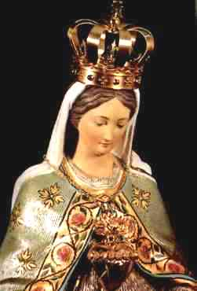 |
There is even a rite in the Catholic Church that involves crowning
statues (idols) of Mary as the Queen of heaven. Once placed on a statue,
the crown remains permanently.
Here is the crowned statue of Mary in the Notre Dame du Cap,
Cap-de-la-Madeleine, Quebec, Canada. Crowned in 1904 at the orders of Pope
Pius X, it is the only statue of Mary to be crowned in all of Canada. The
title of Queen of Heaven can also be found in scripture, but not in
reference to Mary- |
|
From the book
"Miraculous Images of Our Lady",
by Joan Carroll Cruz -Copyright © 1993,
TAN Books and Publishers, INC.,
Rockford, Illinois 61105. |
|
Jer 7:18 The children gather wood, and the fathers kindle the fire, and
the women knead their dough, to make cakes to the queen of heaven, and to
pour out drink offerings unto other gods, that they may provoke me to anger.
Jer 44:17 But we will certainly do whatsoever thing goeth forth out of
our own mouth, to burn incense unto the queen of heaven, and to pour out
drink offerings unto her, as we have done, we, and our fathers, our kings,
and our princes, in the cities of Judah, and in the streets of Jerusalem:
for then had we plenty of victuals, and were well, and saw no evil.
Jer 44:18 But since we left off to burn incense to the queen of heaven, and
to pour out drink offerings unto her, we have wanted all things, and have
been consumed by the sword and by the famine.
Jer 44:19 And when we burned incense to the queen of heaven, and poured out
drink offerings unto her, did we make her cakes to worship her, and pour out
drink offerings unto her, without our men?
The Queen of Heaven, if you check in most any commentary, is none other
than Ishtar, Ashtoreth, or Astarte the very pagan goddess that Israel
worshipped when they fell into apostasy and paganism-
Judg 2:13 And they forsook the LORD, and served Baal and Ashtaroth.
In the apocryphal book of Baruch, which is considered to be inspired
scripture by the Catholic Church, we find a very interesting description of
the pagan practices of the Babylonians, who at the time held the Jews in
captivity. The following quotation is from the Catholic Douay Rheims Bible:
Baruch 6:3 But now, you shall see in Babylon gods of gold, and of silver,
and of stone, and of wood borne upon the shoulders, causing fear to the
Gentiles.
Baruch 6:4 Beware therefore that you imitate not the doings of others, and
be afraid, and the fear of them should seize upon you.
Baruch 6:5 But when you see the multitude behind, and before, adoring them,
say you in your hearts: Thou oughtest to be adored, O Lord.
Baruch 6:6 For my angel is with you: And I myself will demand an account of
your souls.
Baruch 6:7 For their tongue that is polished by the craftsman, and
themselves laid over with gold and silver, are false things, and they cannot
speak.
Baruch 6:8 And as if it were for a maiden that loveth to go gay: so do they
take gold and make them up.
Baruch 6:9 Their gods have golden crowns upon their heads; whereof
the priests secretly convey away from them gold, and silver, and bestow it
on themselves.
So clearly it was the practice of the pagan Babylonians to crown the
statues of their gods. This Pagan practice has also been adopted by the Roman
Catholic Church.
Below you see John Paul II himself, bowing down and paying homage to
crowned statues of Mary, the "Queen of Heaven", in direct violation of the
Commandments of God:
|
Exo 20:4 Thou shalt not make unto thee any graven image, or any
likeness of any thing that is in heaven above, or that is in the earth
beneath, or that is in the water under the earth: |
From the "Be Not Afraid" series of
videos, Copyright ©1992,
Apostolate for
Family Consecration |
|
| 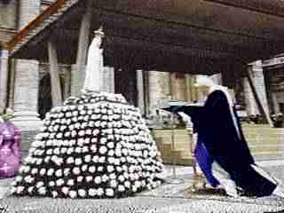 |
Exo 20:5 Thou shalt not bow down thyself to them, nor serve them: for
I the LORD thy God am a jealous God, ... |
From the "Be Not Afraid" series of
videos, Copyright ©1992,
Apostolate for
Family Consecration |
|
Here is a better photo of John Paul II bowing down before a crowned statue
of Mary in front of St. Peter's Cathedral in an ACT OF CONSECRATION TO THE
IMMACULATE HEART OF MARY.
| Dan 11:38 But in his estate shall he honour the God of
forces: and a god whom his fathers knew not shall he honour with gold, and
silver, and with precious stones, and pleasant things.
This statue of Mary and the Christ child is in the Church of the Virgin
of the Pillar, Zaragoza, Spain. The wooden 15 inch high statue stands on a
six foot high jasper pillar covered with gold, silver
and bronze. Around the statue is a field of 148 stars, 80 of which are
studded with jewels. |
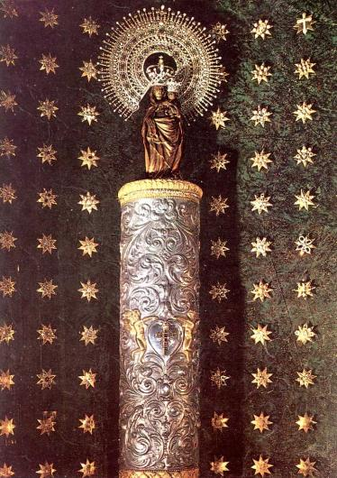 |
|
Images from the book
"Miraculous Images of Our Lady",
by Joan Carroll Cruz -Copyright © 1993,
TAN Books and Publishers, INC.,
Rockford, Illinois 61105. |
|
On occasion this statue is also draped with a gold
embroidered cape which is heavily studded with jewels, and a golden
aureole is added around the jewel encrusted sunburst halo.
La Virgen del Pilar
NUESTRA SEÑORA DEL
PILAR |
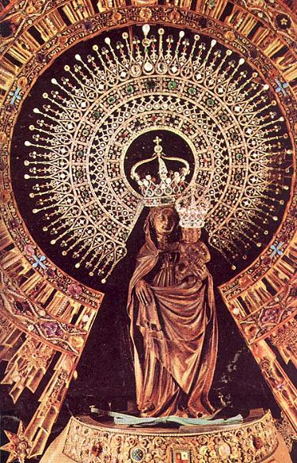 |
Below on the left is a typical depiction of "The Blessed Virgin Mary", the
"Queen of Heaven", with a quite sizeable sunburst behind her head and the
children of Fatima kneeling at her feet. The sunburst has become quite
pervasive in the various forms of Catholic religious imagery. The sunburst is
also referred to as an aureole, nimbus, or halo, and is a very common device
to designate divinity or holiness in various forms of religious art. A sun
worshipping pagan entering a Catholic cathedral for the first time would
immediately recognize his god, the sun, in virtually every painting or icon,
and feel right at home.
|
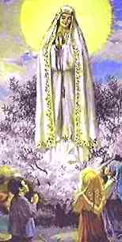 |
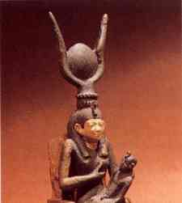 |
|
Our Lady of Fatima |
The goddess Isis of Egypt, the sun disk
above
her head, with the infant Horus.
The British Museum. |
|
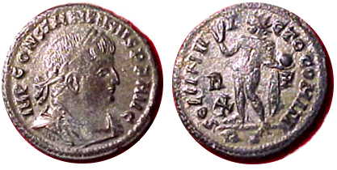 |
|
Above - coin of the pagan emperor
Constantine I, inscribed on the reverse with SOLI INVICTO COMITI - Sol,
Invincible Comrade (of Constantine ) with the sun god wearing a rayed
solar crown, and one hand raised in blessing, the other hand holding a
globe. Below - coin of Pope Innocent XII dated 1698 with a virtually
identical figure supposedly representing Christ, inscribed IPSE EST PAX
NOSTRA - He is our peace. |
Catholics acknowledge the pagan origin of the aureole / nimbus /
halo:
Why is a halo put on the head of a statue of a Saint, and
what is its symbolic meaning?
The halo, or circle, which is supposed to represent a ring of
light, is symbolic of the light of grace bestowed by God. It may be regarded
in art as the development of the aureole, the nimbus and the gloria.
The aureole is a cloud or glow of light in oval form surrounding
the whole figure. The nimbus is a cloud or glow of light around the head.
The gloria is light emanating from the body.
The halo or nimbus around the head of Christ is symbolic of His
divinity.
The pagans used such devices before the Christian Era to signify
power and majesty or prominence. Even in the Christian Era the symbols were
used for famous personages, but Pope Urban III (1623- 1644) forbade the use
of the nimbus for persons who are not at least beatified.
Source:
The Catholic Universe Bulletin, Official
Newspaper of the Cleveland Diocese, August 14th, 1942, The Question Box.
In the plastic arts (painting and sculpture) the symbolism of the nimbus
was early in use among the pagans who determined its form. In the monuments
of Hellenic and Roman art, the heads of the gods, heroes, and other
distinguished persons are often found with a disc-shaped halo, a circle of
light, or a rayed-fillet. They are, therefore, associated especially with
gods and creatures of light such as the Phoenix. The disc of light is
likewise used in the Pompeian wall paintings to typify gods and demigods
only, but later, in profane art it was extended to cherubs or even simple
personifications, and is simply a reminder that the figures so depicted are
not human. In the miniatures of the oldest Virgil manuscript all the great
personages wear a nimbus. The custom of the Egyptian and Syrian kings of
having themselves represented with a rayed crown to indicate the status of
demigods, spread throughout the East and the West. In Rome the halo was
first used only for deceased emperors as a sign of celestial bliss, but
afterwards living rulers also were given the rayed crown, and after the
third century, although not first by Constantine, the simple rayed nimbus.
Under Constantine the rayed crown appears only in exceptional cases on the
coin, and was first adopted emblematically by Julian the Apostate.
Henceforth the nimbus appears without rays, as the emperors now wished
themselves considered worthy of great honour, but no longer as divine
beings. In early Christian art, the rayed nimbus as well as the rayless disc
were adopted in accordance with tradition. The sun and the Phoenix received,
as in pagan art, a wreath or a rayed crown, also the simple halo. The latter
was reserved not only for emperors but for men of genius and
personifications of all kinds, although both in ecclesiastical and profane
art, this emblem was usually omitted in ideal figures. In other cases the
influence of ancient art tradition must not be denied.
Source: The Catholic Encyclopedia, 1913 edition, online -
Nimbus.
Here is a web page with a number of pictures of statues and paintings of
Mary. Note that many contain a sunburst and portray Mary as the crowned "Queen
of Heaven":
The MaryTalk
Picture Gallery
Note the following pictures that each contain pagan sun images.
Church
of St. Catherine of Alexandria in Bethlehem.
St.
Catherine's in Bethlehem (at night).
The
Cloister window in Bethlehem.
Traditional
birthplace of Jesus - Basilica of the Nativity, Bethlehem.
Bethlehem
homepage for the above links.
Golgatha,
Basilica of the Holy Sepulchre, Jerusalem.
Homepage for the
above link.
New sunburst dome
for the Church of the Holy Sepulchre.
Judg 2:13 And they forsook the LORD, and served Baal and Ashtaroth.
Baal worship is sun worship, and Ashtoreth / Ishtar / Astarte is the queen
of heaven. This is why there are so many sunburst images in Catholicism and
why Mary is called the Queen of heaven. It is the apostasy of idol worship of
Baal and Ashtaroth in the church - yet again.
It is as true today as it was then, just with different names.
Go to The
Miracle of the Sun

{kind=link}
{kind=link}
{kind=link}
{kind=link}
{kind=link}
{kind=link}
{kind=link}